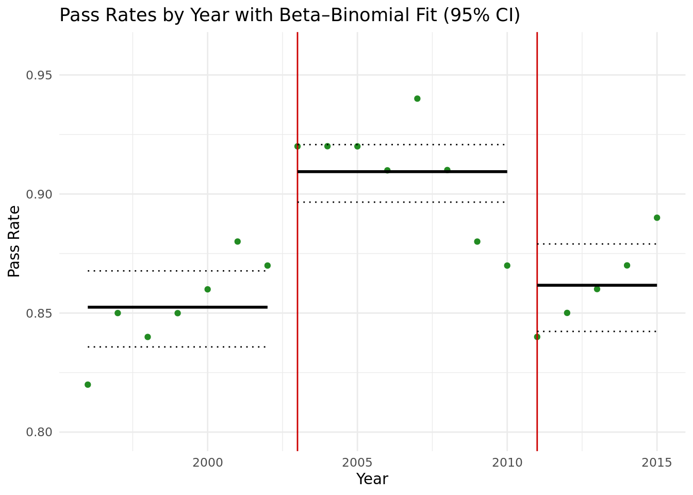

Warning in check_dep_version(): ABI version mismatch:
lme4 was built with Matrix ABI version 2
Current Matrix ABI version is 1
Please re-install lme4 from source or restore original 'Matrix' package
── Conflicts ────────────────────────────────────────── tidyverse_conflicts() ──
✖ tidyr::expand() masks Matrix::expand()
✖ dplyr::filter() masks stats::filter()
✖ dplyr::lag() masks stats::lag()
✖ tidyr::pack() masks Matrix::pack()
✖ tidyr::unpack() masks Matrix::unpack()
ℹ Use the conflicted package (<http://conflicted.r-lib.org/>) to force all conflicts to become errors
library(glmmTMB)
Warning in checkMatrixPackageVersion(getOption("TMB.check.Matrix", TRUE)): Package version inconsistency detected.
TMB was built with Matrix ABI version 2
Current Matrix ABI version is 1
Please re-install 'TMB' from source using install.packages('TMB', type = 'source') or ask CRAN for a binary version of 'TMB' matching CRAN's 'Matrix' package
library(broom)library(emmeans)
Welcome to emmeans.
Caution: You lose important information if you filter this package's results.
See '? untidy'
data <-read.table("data.txt",header =TRUE, as.is =TRUE)
We reasonably assumed that exam pass rates contain unobserved year-to-year variation, such as differences in exam difficulty or cohort quality. To capture this extra source of randomness, we fit a binomial mixture model by including a random intercept for each year. This approach allowed us to separate systematic effects of reform policies from idiosyncratic annual noise.
Implementation Details
We fit a generalized linear mixed model (GLMM) with a logit link, specifying pass/fail outcomes as the response and reform time period as the fixed effect, with year as a random effect:
emm <-emmeans(model, ~ timeperiod, type ="response", re.form =NA)step <-as.data.frame(emm) %>%mutate(period =c("tp2","tp1","tp3")) %>%arrange(period)nm_mean <-intersect(names(step), c("response","prob","emmean"))[1]nm_lower <-intersect(names(step), c("lower.CL","asymp.LCL"))[1]nm_upper <-intersect(names(step), c("upper.CL","asymp.UCL"))[1]step$response <- step[[nm_mean]]step$lower.CL <- step[[nm_lower]]step$upper.CL <- step[[nm_upper]]step$xmin <-c(1996, 2003, 2011)step$xmax <-c(2002, 2010, 2015)ggplot(data, aes(x = Year, y = Pass/N)) +geom_point(color ="forestgreen") +geom_vline(xintercept =c(2003, 2011), color ="red3") +geom_segment(data = step,aes(x = xmin, xend = xmax, y = response, yend = response),inherit.aes =FALSE, color ="black", linewidth =1) +geom_segment(data = step,aes(x = xmin, xend = xmax, y = lower.CL, yend = lower.CL),inherit.aes =FALSE, color ="black", linetype ="dotted") +geom_segment(data = step,aes(x = xmin, xend = xmax, y = upper.CL, yend = upper.CL),inherit.aes =FALSE, color ="black", linetype ="dotted") +labs(title ="Pass Rates by Year with GLMM (binomial) Step Fit",y ="Pass Rate") +coord_cartesian(ylim =c(0.80, 0.96)) +theme_minimal()
The random effect variance was small (0.037), suggesting year effects contributed little beyond reform periods. Coefficients indicated statistically significant differences: time period 1 and time period 3 both had lower pass rates compared to time period 2 (p < 0.001).
The binomial assumption may underestimate variability in exam outcomes because pass probabilities likely vary within each period. To allow for overdispersion, we modeled the yearly pass probabilities as Beta-distributed. This yields a hierarchical structure where exam outcomes are drawn from a binomial conditional on the latent Beta-distributed rate.
Implementation Details
We fit a beta-binomial regression with time period as the predictor using the glmmTMB package with a logit link. The model structure was:
\[
\pi_y \sim \text{Beta}(\alpha, \beta), \quad \text{Pass}_y \sim \text{Binomial}(n_y, \pi_y).
\] Here, dispersion was estimated directly from the data, capturing unmodeled heterogeneity.
period_map <-data.frame(timeperiod =factor(c("tp1","tp2","tp3"), levels =levels(data$timeperiod)),xmin =c(1996, 2003, 2011),xmax =c(2002, 2010, 2015))newdat <-tibble(timeperiod =c("tp1","tp2","tp3")) |>left_join(period_map, by ="timeperiod")pred_link <-predict(beta_binomial_model, newdata = newdat, type ="link", se.fit =TRUE)newdat$fit <-plogis(pred_link$fit)newdat$lo <-plogis(pred_link$fit -1.96* pred_link$se.fit)newdat$hi <-plogis(pred_link$fit +1.96* pred_link$se.fit)# plotggplot(data, aes(x = Year, y = Pass/N)) +geom_point(color ="forestgreen") +geom_vline(xintercept =c(2003, 2011), color ="red3") +geom_segment(data = newdat, aes(x = xmin, xend = xmax, y = fit, yend = fit),inherit.aes =FALSE, color ="black", linewidth =1) +geom_segment(data = newdat, aes(x = xmin, xend = xmax, y = lo, yend = lo),inherit.aes =FALSE, color ="black", linetype ="dotted") +geom_segment(data = newdat, aes(x = xmin, xend = xmax, y = hi, yend = hi),inherit.aes =FALSE, color ="black", linetype ="dotted") +labs(title ="Pass Rates by Year with Beta–Binomial Fit (95% CI)",y ="Pass Rate") +coord_cartesian(ylim =c(0.80, 0.96)) +theme_minimal()

The estimated dispersion parameter was 280, confirming overdispersion relative to a pure binomial. Both time period 1 and time period 3 had significantly lower pass rates than time period 2 (p < 0.001).
Model 3 - Beta-binomial on subset
# Grouping Subsets# Reform Datareform_data <- data %>%filter(Year <2003| (Year >=2006& Year <=2010) | (Year >=2014& Year <=2015)) reform_data$timeperiod <-factor(reform_data$timeperiod, levels =c("tp1","tp2","tp3"))reform_data$timeperiod <-relevel(reform_data$timeperiod, ref ="tp2")
Because policy reforms were phased in gradually, exam cohorts in transition years likely had mixed exposure. To avoid contamination, we fit the beta-binomial model on a restricted dataset excluding these phase-in years. This design isolates the effect of reforms once they were fully implemented.
Implementation Details
We restricted the dataset to years 1996–2002, 2006–2010, and 2014–2015. The same beta-binomial specification was used, with time period as the predictor and a logit link for the mean pass probability.
period_map_sub <-tibble(timeperiod =factor(c("tp1","tp2","tp3"), levels =levels(reform_data$timeperiod)),xmin =c(1996, 2006, 2014),xmax =c(2002, 2010, 2015))present <-unique(reform_data$timeperiod)period_map_sub <-semi_join(period_map_sub,tibble(timeperiod = present),by ="timeperiod")newdat <-select(period_map_sub, timeperiod)pred_link <-predict(beta_binomial_model_subsets, newdata = newdat, type ="link", se.fit =TRUE)newdat$fit <-plogis(pred_link$fit)newdat$lo <-plogis(pred_link$fit -1.96* pred_link$se.fit)newdat$hi <-plogis(pred_link$fit +1.96* pred_link$se.fit)newdat <- dplyr::left_join(newdat, period_map_sub, by ="timeperiod")ggplot(reform_data, aes(x = Year, y = Pass/N)) +geom_point(color ="forestgreen") +geom_vline(xintercept =c(2003, 2011), color ="red3") +geom_segment(data = newdat,aes(x = xmin, xend = xmax, y = fit, yend = fit),inherit.aes =FALSE, color ="black", linewidth =1) +geom_segment(data = newdat,aes(x = xmin, xend = xmax, y = lo, yend = lo),inherit.aes =FALSE, color ="black", linetype ="dotted") +geom_segment(data = newdat,aes(x = xmin, xend = xmax, y = hi, yend = hi),inherit.aes =FALSE, color ="black", linetype ="dotted") +labs(title ="Pass Rates by Year without Phasing Years with Beta–Binomial Fit (95% CI)",y ="Pass Rate") +coord_cartesian(ylim =c(0.80, 0.96)) +theme_minimal()
The dispersion parameter was estimated at 251, again supporting overdispersion. Results showed that time period 1 had significantly lower pass rates than time period 2 (p < 0.001). However, time period 3 was no longer significantly different from time period 2 (p = 0.133).